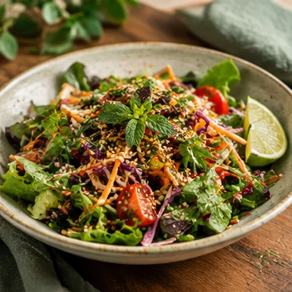

Fresh & vibrantILLUSTRATIVE AMBIENCE CONCEPT
The SAGE feelingLet the city
Plan a visit ↘
Let the city
wait a little.
Inspired by the farm-to-table spirit associated with SAGE Farm Cafe, this concept pairs a calm, green visual identity with a menu that spans salads, café comfort food, drinks and desserts.
Think relaxed conversations, fresh colour, and a table that invites you to take your time.
FreshColourful plates, bright ingredients
GroundedNatural textures and earthy tones
UnhurriedA softer pace for city days